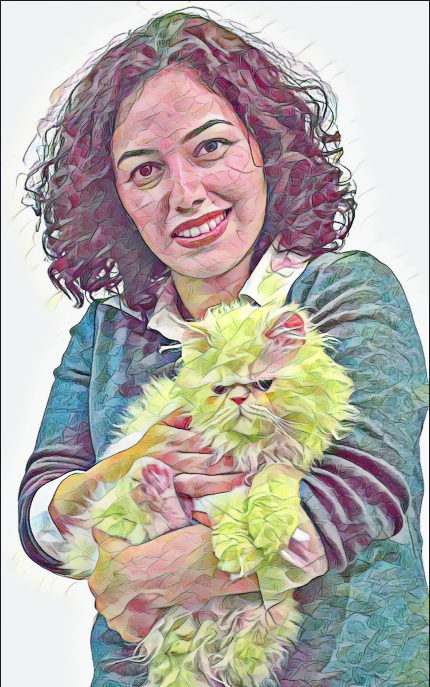

Hi, my name isShiva Elhamian
I'm a (future) Full Stack Developer
01. About Me
I graduated with a bachelor's degree in computer science from the University of Kerman in 2008, and for more than 9 years I worked as a network support technician.
My journey into software development began two years ago with a course on data analysis where I learned Python and SQL, Since then I have taken courses on data analysis, data mining, and data visualization.
I was later accepted to John Abbott College, where I am currently enrolled for the one-year full stack developer program.

02. Education
-
AEC in Full Stack Developer @ John Abbott College, Montreal
2022 - Present -
Data Analyst Nanodegree@ Udacity
2021
Programming for Data Science with Python Nanodegree@ Udacity
2020B.Sc. Computer Science@Shahid Bahonar University Of Kerman, Kerman, Iran
200803. Experience
-
IT Help Desk Supervisor @Payam Noor University, Iran
2009 - 2018 -
IT Help Desk Technician@University of Tehran, Iran
2008-2009

04. My Skills
As a life-long learner, here is my constantly updating list of the soft skills in addition to technical skills that I acquired from school and work places.
- Being people-oriented and team-oriented
- Expert in Excel
- Ability to manage time and perform under pressure
- Experienced in HTML/CSS
- A lifelong learner
05. Get In Touch
Reach me at: Shiva.el@gmail.com.